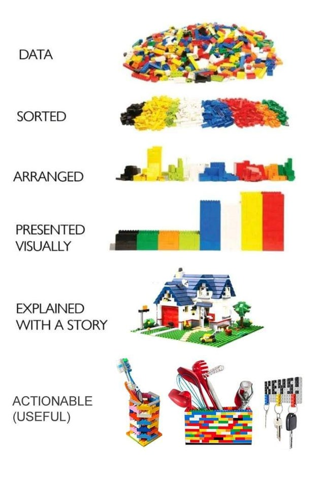
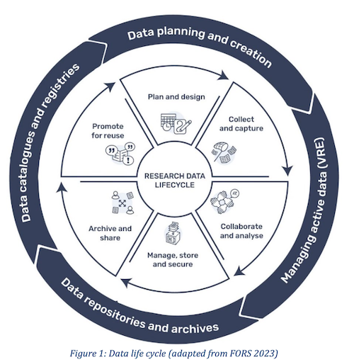

Panorama de la investigación en Humanidades basada en datos
José Luis Losada Palenzuela
RISE (Universität Basel), DaSCH
«Entre lo social y lo digital. Encuentro de jóvenes investigadores del Hispanismo Suizo», Basel, 11.10.2024
http://editio.github.io/presentations/panorama_datos

- Humanidades Digitales Puras: Text Encoding Iniciative.
- [Disciplina] + digital: Lingüística Computacional.
- [Disciplina] + componente digital: bases de datos históricas. Coexistencia
Gestión de datos

"The Lego Data Story", Stanford University, 4.09.2021
- datum (latin: “lo dado”); raw data ≠ listo para analizar.
- Localizado, creado, sistematizado, interpretado, conservado.
- Datos de entrada y salida (implicitos o explícitos).
- Estructurados, no estructurados, semi estructurados.
- Formatos: CSV, XML, TIFF, ZIP, ODD, JPEG, WAV, MP4, DOCX,...
- Research Data Lifecycle.
Ciclo de vida de los datos de investigación
SwissDS-ENV CC BY 4.0
Repositorios
Bernoulli-Euler Online (BEOL), 2019, DaSCH. https://beol.dasch.swiss